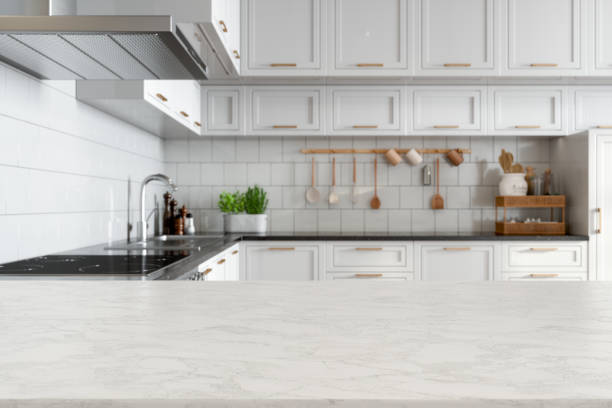

White Cloud Michigan
info@ohmykitchen.pro
White Cloud Michigan
info@ohmykitchen.pro

Upgrade your home in White Cloud Michigan with custom countertops. Choose from granite, quartz, and marble. Expert craftsmanship, affordable pricing, and guaranteed satisfaction for every project.
Click Here To Call Us (877) 848-1711Looking to upgrade your kitchen or bathroom with durable and stylish countertops? Our countertops company in White Cloud Michigan specializes in providing top-notch solutions to enhance the beauty and functionality of your space. We offer a wide selection of materials, including granite, quartz, marble, and laminate, ensuring a perfect match for every style and budget.
With years of experience serving homeowners and businesses in White Cloud Michigan our team takes pride in delivering precise craftsmanship and exceptional customer service. Whether you need custom countertops for a remodel or a full replacement to modernize your property, we’ve got you covered.
Our process is seamless, starting with a free consultation to understand your needs. We guide you through selecting materials, colors, and finishes, ensuring your vision comes to life. Our expert installers use state-of-the-art tools and techniques to ensure a flawless fit and long-lasting results.
When you choose our countertops company in White Cloud Michigan you’re choosing reliability, affordability, and excellence. We work efficiently to minimize disruptions and complete projects on time. Transform your space today with stunning countertops that combine aesthetics with durability.
Contact us in White Cloud Michigan for a free estimate and let us bring your countertop dreams to reality!
Residential & commercial Countertops
Quality services at affordable prices
Immediate 24/ 7 emergency services


Choosing the right countertop for your kitchen or bathroom in White Cloud Michigan is a crucial decision that affects both the functionality and aesthetic of your space. With a wide variety of materials available, it's essential to understand your options to make an informed choice.
Consider Durability and Maintenance: For high-traffic areas like kitchens, granite and quartz countertops are popular due to their durability and low-maintenance qualities. If you're looking for something more eco-friendly, consider recycled materials or bamboo. For bathrooms, materials like marble or engineered stone provide both elegance and resilience to moisture.
Aesthetic Appeal: Your countertop should complement the overall design of your kitchen or bathroom. Light-colored granite or quartz can brighten up a space, while dark tones offer a sleek, modern look. Be sure to consider your cabinet and flooring choices to create a cohesive design that enhances your home's style.
Budget and Installation: The cost of materials can vary widely, so understanding your budget is key. While natural stone may be more expensive, engineered options like laminate or solid surface countertops can offer a more affordable alternative. Be sure to also factor in installation costs when budgeting for your countertop.
Consult a Professional: Choosing the right countertop requires careful thought and expertise. For the best results in White Cloud Michigan consult with a local professional who can help you select and install the perfect countertop for your kitchen or bathroom needs.
Residential & commercial Countertops
Quality services at affordable prices
Immediate 24/ 7 emergency services
Elevate your home bar experience with stylish and functional countertops designed for entertaining. Our countertop installation service for home bars focuses on aesthetics and practicality, ensuring your bar is a space where you can host and enjoy gatherings comfortably. From sleek quartz to warm butcher block, we offer materials that complement your home decor while being durable enough for everyday use.
Choosing us means you get a dedicated team that appreciates how important your home bar is to your entertainment space. We help you select the right materials and design options that meet both your style and functionality needs. Our experienced installers ensure that every detail is perfect, resulting in a stunning home bar countertop. Impress your guests and enhance your hosting capabilities with our expert installation services for home bars .

As sustainability becomes increasingly important in home design, our eco-friendly countertop options cater to environmentally conscious homeowners. We offer a selection of sustainable materials, including recycled glass, bamboo, and reclaimed wood, ensuring that your countertops reflect your values without compromising on style or performance.
Our team is committed to helping you select the best eco-friendly materials that fit your design needs. We believe that you shouldn’t have to sacrifice beauty for sustainability. Our eco-friendly countertops can be customized in various colors and finishes, making them a beautiful addition to any room in your home.
Installation of eco-friendly countertops requires the same level of expertise as traditional materials, and our skilled team is dedicated to ensuring every installation meets the highest standards of quality and craftsmanship.
Choose our eco-friendly countertops and enjoy the peace of mind that comes from making sustainable choices for your home. You'll contribute to a healthier planet while enjoying beautiful, functional surfaces designed for modern living.

When only the best will do, look to our luxury countertop installation service . We specialize in high-end materials, including exquisite granite, luxurious marble, and stunning quartzite. Our commitment to quality and craftsmanship ensures that your luxury countertops will not only enhance the beauty of your home but will also serve as a long-lasting investment.
Choosing us guarantees your luxury countertop project receives the attention and expertise it deserves. We work closely with you to select materials that reflect your style and complement your space, ensuring every aspect of the installation is handled with precision. Our team of skilled artisans has extensive experience with high-end materials, providing flawless finishes that will leave you in awe. Elevate your home with our luxury countertop installations in White Cloud Michigan where elegance meets expertise.

In commercial kitchens, durability and functionality are paramount. We provide high-quality countertop installation services tailored to commercial environments ensuring that your kitchen meets both aesthetic and practical needs.
Why choose our services for your commercial kitchen? We understand the unique requirements of commercial spaces, offering durable materials that withstand wear and tear. Our team is experienced in working with various businesses, from restaurants to catering facilities, ensuring compliance with health and safety regulations. We’ll work with your schedule to minimize downtime, delivering superior service without disruption to your operations. Trust us to equip your commercial kitchen with countertops designed for peak performance and longevity!

First impressions matter, and retail store countertops play a crucial role in creating a welcoming environment for customers. Our retail store countertop installation service specializes in designing and installing striking countertops that reflect your brand and attract customers. From sleek designs to unique finishes, our options are tailored to fit the overall aesthetic of your store.
Choosing our services means you work with experts who understand retail dynamics. We’ll consult with you to find the right materials that align with your branding while ensuring durability and ease of maintenance. Our professional installation guarantees a seamless look that enhances your retail space. Impress your customers and boost your brand’s image with our retail store countertop services .
The hospitality industry demands elegance and durability, and our hotel and restaurant countertop solutions provide the perfect combination of both. We understand that the countertops in these environments need to make a lasting impression while also standing up to daily wear and tear.
Our team specializes in a range of high-quality materials tailored to suit restaurants, bars, and hotel lobbies. From sophisticated granite and marble to resilient solid surface options, we have the expertise to install countertops that align with your brand’s aesthetic and functional needs.
We work closely with architects and designers to create customized solutions that enhance the overall ambiance of your space. Our meticulous installation process ensures that your countertops are not only visually stunning but also meet the operational demands of a busy environment.
Invest in our hotel and restaurant countertop solutions for a sophisticated and functional space that leaves a lasting impression on your guests. Experience our commitment to quality and customer service firsthand.

Create a productive and stylish workspace with our office countertop installation service in White Cloud Michigan . We specialize in providing a variety of countertop solutions that cater to the unique needs of offices, from reception areas to workstations. Our countertops are designed to enhance functionality while creating a professional atmosphere.
Why choose us? Our team understands that the office environment should be a blend of beauty, comfort, and practicality. We offer materials that suit all styles, ensuring your office space reflects your company culture while supporting daily operations. Our expert installation guarantees workspaces that function seamlessly while providing aesthetic appeal. Upgrade your workplace with our professional office countertop installation services in White Cloud Michigan .

In medical and laboratory environments, reliability and cleanliness are of utmost importance. Our countertops for medical and laboratory settings are designed to meet rigorous standards of hygiene while being durable enough to withstand heavy use. We offer a variety of surfaces that are non-porous, easy to clean, and resistant to chemicals and stains.
What makes our service exceptional? We focus on safety and compliance, ensuring our materials align with health standards and regulations. Our knowledgeable team understands the specific requirements of medical and laboratory settings, recommending countertops that maintain a sterile environment. Choose us for your medical and laboratory countertop needs and ensure a safe and efficient workspace for professionals and patients alike.
Years Experience
Expert Technicians
Satisfied Clients
Compleate Projects
When it comes to choosing the perfect countertops for your kitchen, ohmy kitchen is the trusted name across White Cloud Michigan . With years of experience, our team specializes in providing high-quality countertops that enhance both the functionality and beauty of your space. Whether you're renovating an existing kitchen or designing a new one, our vast selection and expert craftsmanship ensure your countertops meet your specific needs and style preferences.
At ohmy kitchen, we understand that countertops are an essential part of your home. That’s why we offer a wide range of materials, including granite, quartz, marble, and more, allowing you to select the ideal fit for your kitchen. Our countertop solutions are not only aesthetically pleasing but also durable and easy to maintain, providing long-term value for your investment.
What sets us apart from the competition in White Cloud Michigan is our commitment to customer satisfaction. We take pride in offering personalized consultations, helping you choose the best countertops that complement your unique vision and budget. From precise installation to seamless finishing, our team ensures that every detail is handled with the utmost care.
Choose ohmy kitchen for all your countertop needs in White Cloud Michigan and experience unparalleled quality, expert service, and a finished product that exceeds your expectations. Let us turn your kitchen into a space that you’ll love for years to come!
When it comes to kitchen and bathroom renovations, granite countertops are a top choice for homeowners . Known for their durability, elegance, and timeless appeal, granite offers a unique, natural beauty that enhances any space. As experts in granite countertop installation, we pride ourselves on delivering high-quality craftsmanship and personalized customer service. Our team is experienced in selecting the right slabs, ensuring proper measurements, and performing meticulous installations.
But why choose us? We understand that each customer has unique preferences and needs when it comes to countertops. Our extensive selection of granite colors and patterns guarantees that you’ll find the perfect fit for your home. On top of that, we handle the entire process, from consultation to installation, ensuring a seamless experience. Our commitment to excellence and customer satisfaction sets us apart in the White Cloud Michigan area—let us make your dream kitchen or bathroom a reality with our stunning granite countertops!
Quartz countertops have become synonymous with elegant and functional surfaces in kitchens and bathrooms alike. Combining the beauty of natural stone with engineered reliability, they offer a non-porous, scratch-resistant surface that’s perfect for busy households. Our quartz countertop installation services ensure you get premium materials and expert craftsmanship tailored to your style.
What makes us the best choice for your quartz needs? We offer a vast array of colors and finishes, allowing you to personalize your space effortlessly. Our team takes pride in their attention to detail, ensuring precise installation that fits perfectly. Furthermore, we provide ongoing support and maintenance tips to keep your quartz countertops looking brand new. Choosing us means choosing quality, durability, and style—your satisfaction is our priority!
Marble countertops evoke sophistication and luxury. If you are contemplating a marble countertop installation our team is here to guide you through the process. Marble offers unparalleled beauty with its unique veining and color variations. Perfect for kitchens and bathrooms alike, marble adds a touch of class and elegance that few materials can match.
Choosing us means choosing expertise and quality. We specialize in the intricacies of marble installation, ensuring every slab is aligned perfectly and finished to your specifications. Our extensive experience means you can rely on us to avoid common pitfalls associated with marble as a material, such as seaming and finishing. We are dedicated to delivering exceptional results that will enhance the beauty of your space for years to come. Discover the timeless appeal of marble countertops with our professional installation services.
If you’re looking to add warmth and functionality to your kitchen, our butcher block countertop installation service is the perfect choice. Butcher block countertops offer a rustic charm, blending form and function seamlessly. Made from layers of wood, these countertops are not only beautiful but also practical for food preparation and cooking.
Our team specializes in butcher block installations, guaranteeing that your countertops are crafted with the finest woods available, such as maple, walnut, or cherry. We understand the importance of selecting the right wood grains and finishes, which is why we involve you in every step of the process.
Beyond aesthetics, our butcher block countertops are designed for durability and ease of maintenance. We guide you on how to care for your wooden surfaces, ensuring they remain stunning for years to come. When you choose us, you’re not just choosing a countertop; you’re making an investment in quality and craftsmanship that will enhance your kitchen for years to come.
If affordability and versatility are your main considerations, laminate countertops provide an effective solution that doesn’t compromise on style. Laminate is available in a vast array of colors and patterns, making it perfect for various decor styles. Our laminate countertop installation services in White Cloud Michigan ensure you receive a high-quality product tailored to your specific needs.
Our installation process is designed to be efficient without sacrificing craftsmanship. We utilize superior quality laminates that are scratch and water-resistant, ensuring longevity. Our skilled professionals will guide you through selecting the right laminate that matches your vision and elevates your space.
You should choose us for your laminate countertop installation because we pride ourselves on delivering exceptional value. Our commitment to customer satisfaction means that we are always ready to address your concerns and make recommendations based on best practices. We strive to ensure that your new countertops enhance your home and provide years of reliable service.
Solid surface countertops are an innovative option for those seeking a blend of durability, versatility, and design flexibility. Our solid surface countertop installation service offers customizable solutions that can fit seamlessly into any kitchen or bathroom. Known for their non-porous nature, solid surface countertops are easy to clean and resist stains, making them a practical choice for busy households.
Why partner with us? Our experienced team provides in-depth consultation services to help you choose the ideal solid surface material and design that complements your space. We pride ourselves on our attention to detail and the high-quality finishes we provide. From intricate edge designs to seamless installations, our solid surface countertops will enhance your property’s aesthetic while offering exceptional functionality. Experience the endless possibilities of solid surface counters with our expert installation services.
Concrete countertops are a bold choice, offering an industrial style that can be beautifully customized. Whether you're looking for a sleek, modern aesthetic or a rustic charm, our concrete countertop installation services can deliver a product tailored to your specific vision.
Why should you work with us on your concrete project? Our experts are skilled in creating stunning, bespoke concrete countertops. We focus on quality and detail, ensuring that each piece meets the highest standards. Our team provides advice on color, texture, and finish options to ensure your countertops align perfectly with your home's decor. Choosing us means investing in a unique and long-lasting feature for your space—let us bring your concrete countertop dreams to life!
For environmentally conscious homeowners, recycled glass countertops offer a unique blend of sustainability and style. With sparkling aesthetics and a commitment to eco-friendliness, these countertops can transform any space into a modern masterpiece. Our recycled glass countertop installation services are designed to provide a stunning, sustainable solution for your kitchen or bathroom.
Why choose our services? We specialize in high-quality recycled glass products that are both durable and visually appealing. Our team is dedicated to providing professional installation, ensuring that your new countertops are both functional and beautiful. Plus, we can guide you on the best design choices that complement your existing décor while showcasing your commitment to sustainability. Experience the perfect harmony of style and sensitivity to the environment with our stunning recycled glass countertops!
Every space is unique; therefore, your countertops should be too. Our custom countertop design and fabrication service allows you to create a one-of-a-kind surface that perfectly fits your style and requirements. Whether you desire a bold statement piece or a subdued complement to your decor, we offer a vast selection of materials, colors, and styles that can be tailored to your specifications.
By choosing our custom services, you benefit from our in-depth consultation process where our designers work closely with you to capture your vision, taste, and functional needs. We are experts in fabrication techniques, ensuring that your custom countertop not only looks amazing but also performs well in your daily activities. Our focus is on excellence, precision, and creativity. Let us make your ideal countertops a reality with our superior custom design and fabrication services in White Cloud Michigan .
If your current countertops are outdated or damaged, it may be time for a replacement. Our countertop replacement services in White Cloud Michigan provide a streamlined approach to upgrading your space. We ensure minimal disruption while delivering high-quality installations that breathe new life into your kitchen or bathroom.
Our team works efficiently and carefully to remove your old countertops, taking care to preserve the integrity of your cabinets and other installations. From there, we guide you through selecting the perfect material, style, and color that aligns with your vision.
Why choose us for your countertop replacement needs? We understand that replacing countertops is a significant investment, and our goal is to ensure that the process is as hassle-free as possible. Our vast experience and commitment to quality allow us to deliver results that enhance your home’s value while providing functional and stylish surfaces.
Transform your outdoor space into a culinary haven with our outdoor kitchen countertop installation services . Whether you’re entertaining guests or enjoying a family barbecue, having the right countertops can elevate your outdoor cooking experience.
Our team specializes in materials that are suited for outdoor environments, ensuring they withstand the elements while providing style. We offer a variety of options including granite, concrete, and recycled glass that are designed to resist fading, stains, and moisture. Our goal is to create a functional and beautiful outdoor kitchen that you'll love to spend time in.
From the initial design phase to the final installation, we work closely with you to ensure that your outdoor countertops meet your aesthetic and practical needs. We understand that outdoor living spaces require special considerations, and our expertise ensures that you receive a stunning and durable solution.
When you choose our outdoor kitchen countertop services, you receive exceptional craftsmanship combined with premium materials, resulting in a space that is perfect for entertaining and cooking. Enjoy the outdoors and take your cooking to another level with our expertly installed kitchen countertops.
A kitchen island is the centerpiece of any culinary space, and choosing the right countertops is essential for functionality and style. Our kitchen island countertop installation services are designed to help you create the kitchen of your dreams, complete with beautiful and durable surfaces that enhance your cooking experience.
We offer a range of materials, including granite, quartz, and butcher block, each providing its unique advantages. Our skilled team takes the time to understand your needs and preferences, ensuring that we recommend the perfect countertop material that suits your island's design and your cooking habits.
With a focus on quality and precision, we ensure that your kitchen island countertops are not only visually stunning but also provide the functionality you expect from a high-traffic area. We also offer edge design and customization options to give your island a truly unique look.
Investing in a kitchen island with our expert installation means prioritizing both form and function. Experience the joy of cooking and entertaining in a space that showcases your style beautifully, all while receiving top-notch service throughout the entire process.
Transform your bathroom into a luxurious retreat with our stylish bathroom countertop installation services in White Cloud Michigan . We offer a range of materials to enhance the elegance and functionality of your bathroom space.
Why are we the best option for your bathroom countertops? Our expert team understands the unique challenges of bathroom renovations, from moisture resistance to durability. We help you choose the best material, whether it’s elegant marble, functional quartz, or beautiful solid surface, to meet your specific needs. We are committed to excellent craftsmanship and customer service, ensuring a hassle-free installation process. Elevate your bathroom’s style and utility with our premium countertop options!
When it comes to countertops, the edge design can significantly impact the overall look and feel of your space. Our countertop edge design and customization services in White Cloud Michigan provide clients with the opportunity to personalize their surfaces, creating unique features that stand out.
Whether you prefer a traditional beveled edge, a modern square edge, or an ornate profile, our experienced team can help you choose the perfect style that complements your decor. We take pride in our attention to detail, ensuring that every edge is crafted to perfection.
Choosing us for your edge design customization means opting for professionals who understand the nuances of styles and materials. Our commitment to high-quality craftsmanship and customer service ensures that you receive a product that not only meets your needs but also inspires and enhances your space.
Breathe new life into your old countertops with our professional countertop resurfacing services in White Cloud Michigan . This cost-effective solution can significantly enhance the appearance and durability of your surfaces without the need for complete replacement.
Why choose our resurfacing services? Our experienced team specializes in a variety of materials, allowing us to resurface your countertops to look as good as new. We utilize high-quality materials and advanced techniques to ensure a flawless finish, extending the lifespan of your surfaces. Our resurfacing service is quick, efficient, and designed to minimize disruption in your home while providing superb results. Trust us to revitalize your countertops with our exceptional resurfacing solutions!
Damage to countertops can be an eyesore and affect the functionality of your home. Our countertop repair and restoration services in White Cloud Michigan are here to handle everything from minor scratches to significant damage, ensuring your surfaces look great again.
Why are we the best choice for your repair needs? Our skilled technicians understand how to assess the type of damage and apply the best methods for restoration. We work with various materials, including granite, quartz, and laminate, ensuring a careful and effective repair process. Our commitment to excellence means that we’ll restore your countertops efficiently and professionally while providing advice on future care. Don’t let damage detract from your home’s beauty—let us restore your countertops to their former glory!
Protecting your stone countertops is essential to maintaining their beauty and longevity. Our sealing and maintenance service ensures your stone surfaces—whether granite, marble, or quartz—are shielded against stains, spills, and everyday wear. We use high-quality sealants that penetrate deep into the stone, providing long-lasting protection while enhancing its natural beauty.
Why partner with us? Our experts are thorough in their evaluation of your countertops, and we provide professional sealing that allows you to enjoy your surfaces worry-free. Additionally, we offer ongoing maintenance plans to ensure your countertops remain in pristine condition over their lifespan. Count on us for sealing and maintenance that will keep your stone countertops beautiful and functional for years to come .
When it comes to selecting the ideal countertop material for your home or business in White Cloud Michigan granite, quartz, and marble stand out as top choices. These materials not only add elegance to any space but also provide exceptional durability and functionality.
Granite Countertops are known for their rugged strength and heat resistance, making them perfect for high-traffic kitchens or bathrooms. With unique patterns and colors, granite adds a natural charm that enhances the aesthetics of your home. It's also highly scratch-resistant, making it ideal for busy areas in White Cloud Michigan .
Quartz Countertops offer a low-maintenance alternative, combining beauty and practicality. Engineered from natural quartz stone and resin, they are incredibly durable, resistant to stains, and non-porous, making them easy to clean. Quartz countertops are also available in a wide range of colors and patterns, providing endless design possibilities for your White Cloud Michigan home.
Marble Countertops are synonymous with luxury and timeless beauty. Known for their elegant veining and smooth surface, marble countertops elevate any space in White Cloud Michigan . While they require more maintenance than granite or quartz, their sophisticated appearance is well worth the extra care. Marble is perfect for those who seek a blend of style and class.
Whether you opt for the rugged durability of granite, the low-maintenance appeal of quartz, or the timeless elegance of marble, these materials offer numerous benefits for homeowners in White Cloud Michigan . Choose the right countertop for your needs and enjoy lasting beauty and functionality for years to come.
According to the United States Census Bureau, the city has a total area of 2.00 square miles (5.18 km2), of which 1.95 square miles (5.05 km2) is land and 0.05 square miles (0.13 km2) is water.
The cost of countertops varies depending on the material, size, and complexity. Contact OhMy Kitchen in White Cloud Michigan for a personalized quote.
Yes, OhMy Kitchen offers countertop resurfacing services restoring your countertops to like-new condition without a full replacement.
For outdoor kitchens we recommend granite or quartzite due to their durability and resistance to the elements.
Absolutely! OhMy Kitchen offers professional countertop installation services throughout White Cloud Michigan to ensure a perfect fit and finish.
Our professionals at OhMy Kitchen will assess your space, check for necessary preparations, and ensure your kitchen is ready for a smooth countertop installation in White Cloud Michigan .
Use cutting boards and trivets to prevent scratches. Our experts at OhMy Kitchen can recommend the best protective methods for your countertop material.
For small kitchens, lighter-colored materials like quartz or light granite can create an illusion of space and brightness, making them ideal for your White Cloud Michigan home.
Yes, OhMy Kitchen offers free consultations where we discuss your countertop needs, style preferences, and budget.
Simply contact OhMy Kitchen through our website or give us a call, and we will provide a detailed, no-obligation quote for your countertop project in White Cloud Michigan .
Yes, OhMy Kitchen provides countertop samples for you to view in person at our showroom or by scheduling a visit .
Typically, countertop installation by OhMy Kitchen takes 1-3 days, depending on the material and size of your project.
Marble countertops require a little extra care, such as regular sealing and avoiding acidic cleaners. Our team can guide you on proper care for your marble countertops .
Yes, many of our countertop materials, such as quartz and granite, are highly resistant to stains, ensuring long-lasting beauty for your kitchen .
Yes, OhMy Kitchen provides fully customizable countertops allowing you to select the perfect size, color, and finish for your kitchen.
At OhMy Kitchen, we offer a wide range of countertops, including granite, quartz, marble, and more, to suit every style and budget .
Yes, certain materials, like quartz, are non-porous and resistant to mold and bacteria, ensuring a clean and healthy kitchen environment .
Yes! OhMy Kitchen offers a variety of modern countertop styles, including sleek quartz and polished granite, perfect for contemporary homes .
We offer a wide variety of colors, from classic whites and blacks to vibrant reds and blues, to suit every design preference .
Yes, OhMy Kitchen offers countertop repair services helping restore your surfaces to their original condition.
Our experts at OhMy Kitchen will help you choose the best material based on durability, aesthetics, and maintenance needs specific to your kitchen in White Cloud Michigan .
If your countertop is damaged, contact OhMy Kitchen immediately, and we will help assess the damage and provide repair or replacement options.
Yes, we offer sustainable and eco-friendly countertop options like recycled glass and bamboo to customers in White Cloud Michigan .
Absolutely! At OhMy Kitchen, we can create custom-shaped countertops to fit your kitchen's unique layout and style .
We offer a warranty on all our countertops, ensuring peace of mind for our customers in White Cloud Michigan with long-lasting quality.
Yes, at OhMy Kitchen, we offer countertops in multiple thickness options, from sleek and modern thin profiles to thicker, more substantial options.
Maintenance varies by material, but regular cleaning with gentle products is recommended. Our team at OhMy Kitchen can provide specific care instructions for your countertops .
In some cases, installing new countertops over existing ones is possible. Our team at OhMy Kitchen can assess your current countertops and recommend the best approach for your project .
Many of our materials, such as granite and quartz, are highly heat resistant, making them perfect for cooking environments in White Cloud Michigan .
Granite countertops offer durability, resistance to heat and scratches, and a timeless aesthetic, making them a top choice for homeowners .
Yes, OhMy Kitchen offers countertop replacement services throughout White Cloud Michigan helping you upgrade to more durable or stylish options.
I had a fantastic experience with ohmy kitchen. The countertops are high-quality, and the installation was flawless. I couldn’t be happier with the result in White Cloud Michigan !
Profession
I’m in love with my new kitchen countertops from ohmy kitchen! They were easy to work with, and the craftsmanship is excellent. Great experience in White Cloud Michigan !
Profession
I’m extremely happy with my new countertops from ohmy kitchen! The team was great to work with, and the end result is just perfect. Highly recommend them in White Cloud Michigan !
Profession
White Cloud MI Countertops Pros
(877) 848-1711
info@ohmykitchen.pro
09.00 AM - 09.00 PM
09.00 AM - 12.00 PM